This TBC Classic Mining leveling guide will show you the fastest way to level your Mining profession up from 1 to 375 in Burning Crusade Classic.
This TBC Classic Mining leveling guide will show you the fastest way to level your Mining profession up from 1 to 375 in Burning Crusade Classic.
Mining serves three professions: Blacksmithing, Jewelcrafting, and Engineering, so it's really good combined with any of these three. Check out my TBC Classic Blacksmithing leveling, Jewelcrafting leveling, or my Engineering leveling guide if you want to level any of these professions.
I recommend trying Zygor's 1-70 Leveling Guide if you are still leveling your character or you just started a new alt. The guide will help you to reach level 70 a lot faster.
Mining Trainers
You can learn Mining from any of these NPCs below. Just click on any of the links below to see the trainer's exact location. You can also walk up to a guard in any city and ask where the Mining trainer is, and then the trainer will be marked with a red flag on your map.
Classic Trainers (1-300)
Horde trainers:
 Makaru in Orgrimmar.
Makaru in Orgrimmar.- Brom Killian in Undercity.
- Brek Stonehoof in Thunder Bluff
- Johan Focht in Silverpine Forest.
- Krunn in Durotar.
- Pikkle in Tanaris.
- Belil in Silvermoon City.
Alliance trainers:
 Geofram Bouldertoe in Ironforge.
Geofram Bouldertoe in Ironforge.- Gelman Stonehand in Stormwind City.
- Kurdram Stonehammer in Darkshore.
- Matt Johnson in Duskwood.
- Yarr Hammerstone in Dun Morogh.
- Pikkle in Tanaris.
- Muaat in The Exodar.
TBC Trainers (300-375)
You can learn the new TBC Mining skill in Hellfire Peninsula from  Hurnak Grimmord (Alliance) at Honor Hold or
Hurnak Grimmord (Alliance) at Honor Hold or  Krugosh (Horde) at Thrallmar.
Krugosh (Horde) at Thrallmar.
Smelting to 290
If you have enough gold, you can actually skip the first 290 skill points by simply smelting ores. But, if you need the ores for Jewelcrafting, or you simply prefer leveling Mining regularly, then scroll down a bit in the guide for farming routes.
Shopping List
Most smelting recipes are yellow or green, so I cannot list the exact number of ores that you will need. The list below covers the estimated average for most players, but it's possible you will need to buy a few extra ores if you are unlucky with the skill gains.
- 130x
 Copper Ore
Copper Ore - 70x
 Tin Ore
Tin Ore - 35x
 Silver Ore
Silver Ore - 60x
 Iron Ore
Iron Ore - 25x
 Gold Ore
Gold Ore - 300x
 Mithril Ore
Mithril Ore - 60x
 Truesilver Ore
Truesilver Ore - 170x
 Thorium Ore
Thorium Ore
| Skill | Notes |
|---|---|
| 1-65 | 110-130x |
| 65-75 | 70x |
| 75-105 | 70x |
| 105-125 | 25-35x |
| 125-155 | 50-65x |
| 155-175 | 20-25x |
| 175-200 | 40x |
| 200-230 | 190-300x The skill points between 225-230 have a very low chance to skill up, so you might need even more if you are unlucky. |
| 230-250 | 40-60x |
| 250-290 | 140-190x |
Mining Leveling Routes
Don't forget to buy a  Mining Pick from the Mining Supply vendor near your trainer! You don't have to equip it, but you have to have one in your inventory.
Mining Pick from the Mining Supply vendor near your trainer! You don't have to equip it, but you have to have one in your inventory.
Make sure that you turn on the Find Minerals filter on your minimap!

1 - 65
Every starter zone is filled with  Copper Ore. It doesn't matter which one you choose.
Copper Ore. It doesn't matter which one you choose.
Night Elf players must wait until they get to Darkshore before they can start leveling mining because Teldrassil doesn't have any Copper Ore.
After you pass Razor Hill, go inside the cave marked on the map before you jump down!
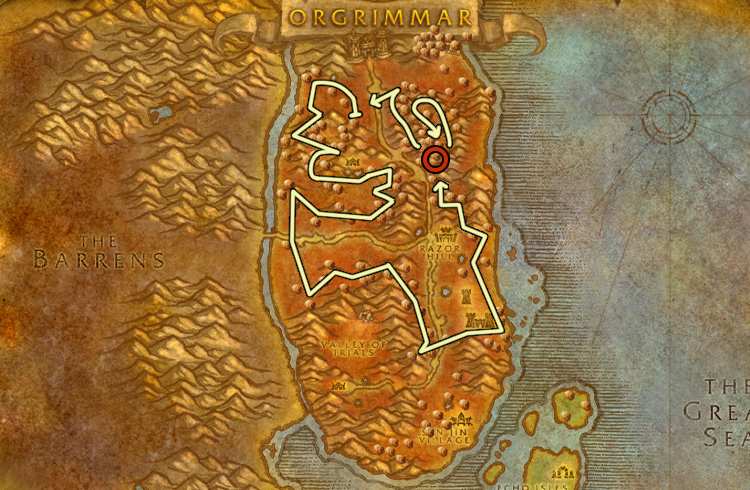
High level players should always enter the Venture Co. Mine because you will get around 8 Copper Veins from clearing both the mine and the small area after the mine at the side the mountain. (you can only access this area from the mine)
It can be a nightmare to find the exit the first time you are there so I included a small map. You won't see this map in-game, because it's from the Cataclysm expansion, but the layout is the same. Make sure to go to every corner of the cave!
Low level players should skip both caves.
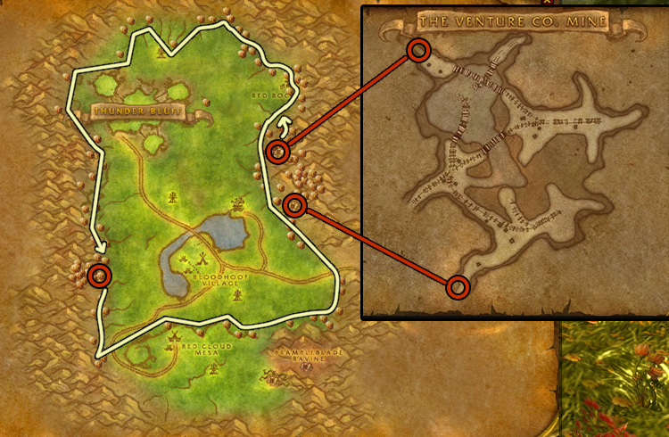
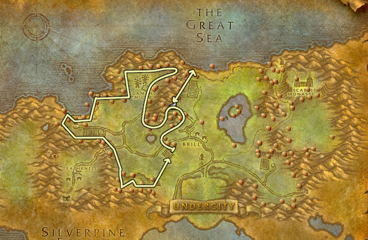
Low level players should skip both caves.
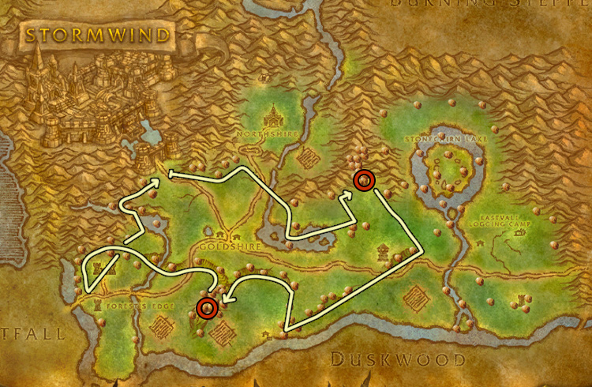
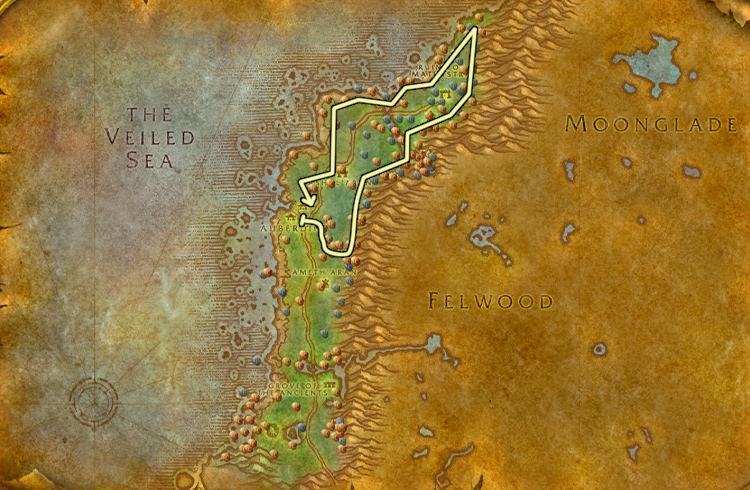
The respawn rate is fast enough that you don't have to loop around the whole zone, so you can use these two routes. If you have competition, you should move between the two routes while mining copper between them.
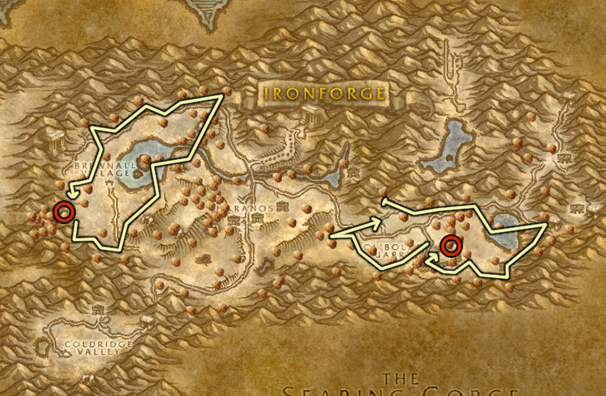
65 - 125
Visit your trainer and learn Journeyman Mining. (You need to level up Mining to at least 50)
Ores in these zones:  Tin Ore,
Tin Ore,  Copper Ore,
Copper Ore,  Silver Ore
Silver Ore
Low-level players should skip the two caves marked with red circles.
Sometimes you get bad respawns, and all three nodes in the Yeti cave will be Mithril or Iron. You can't mine them yet because they require higher mining skill, and if there is no one else farming in the zone, they can't respawn as Tin without someone mining them, so if this happens, just skip the cave.
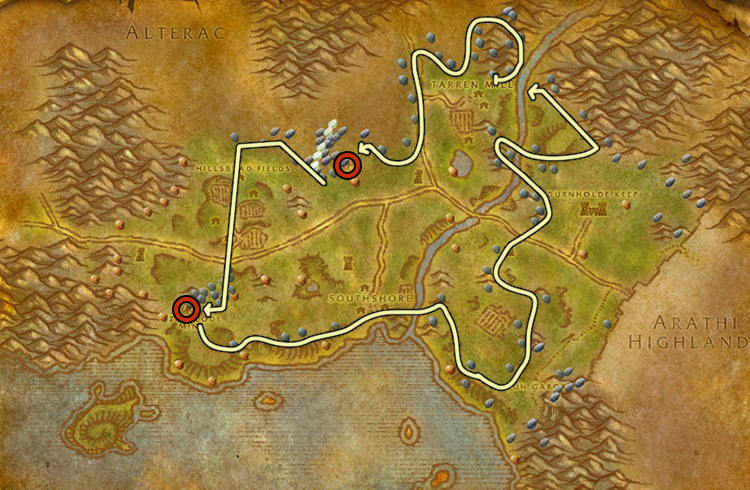
Low level players should skip both caves and stick to the east side of Redridge.
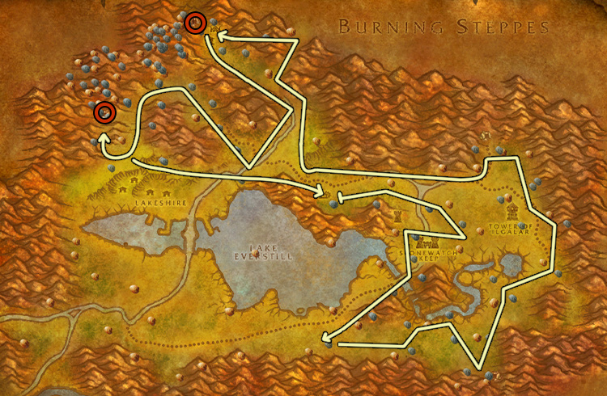
The respawn rate should be fast enough that you don't have to enter the cave marked on the map, but there is always two Tin Veins inside, so I think it's worth going inside with high level characters.
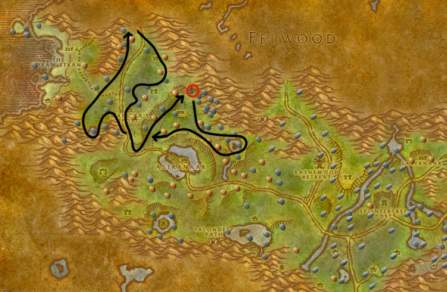
There is more Tin/Copper at the southern route, but you can use the northern route as an alternative if there are too many people farming in the zone. The difference between the two is not that big.
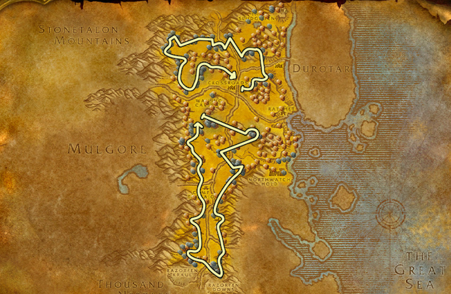
125 - 175
Visit your trainer and learn Expert Mining. (You need to level up Mining to at least 125)
Ores in these zones:  Iron Ore,
Iron Ore,  Tin Ore,
Tin Ore,  Gold Ore
Gold Ore
There are 4 caves marked with red circles on the map, make sure to go all the way to the end of each cave because you won't see all the mining veins from the entrance.
Low level players should skip all 4 caves, and low level Alliance players should take a detour and go south of Hammerfall!
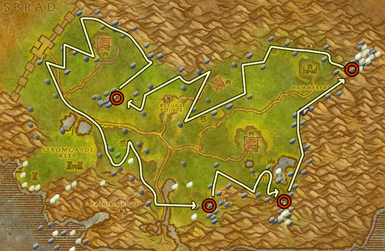
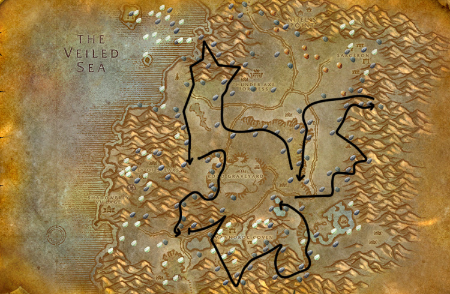
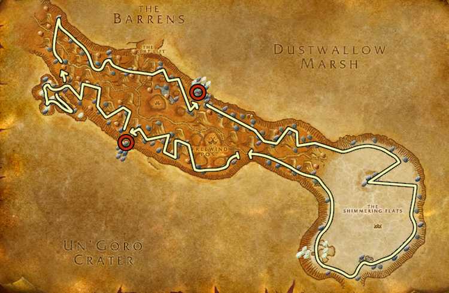
175 - 245
Don't forget to visit your Mining trainer and learn Artisan Mining when you reach 225! (You need to level up Mining to at least 200)
Ores in these zones:  Mithril Ore,
Mithril Ore,  Truesilver Ore
Truesilver Ore
The red route should be skipped by lower level players because the area is filled with level 62 elites. Lower level players might also want to consider skipping the cave marked with a red circle on the map. (depends on your gear/class)
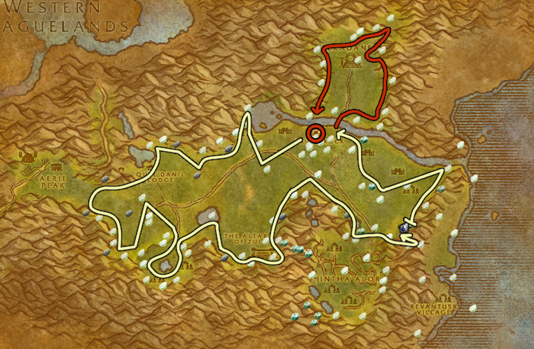
Players below level 60 should skip the 4 caves marked with red circles.
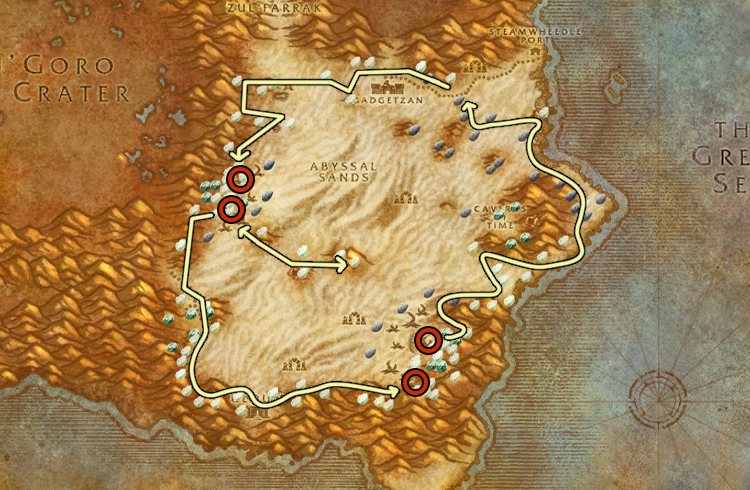
245 - 275
Ores in these zones:  Mithril Ore,
Mithril Ore,  Truesilver Ore,
Truesilver Ore,  Thorium Ore
Thorium Ore
There are 2-3 mineral veins in the two caves marked with the red circles on the map.
Lower level players should probably skip the cave to the south. It really depends on your level/gear/class.
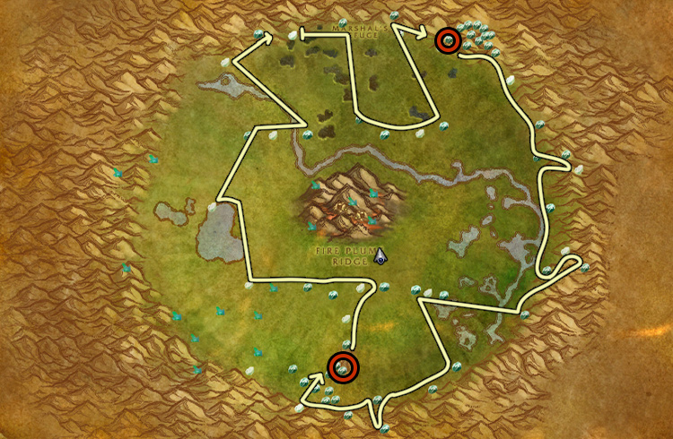
There are two caves marked with a red circle on the map, both of them have a lot of mobs inside, so I would only recommend this farming place to level 60 players with good gear, or for Druids and Rogues with stealth.
It's really hard to navigate inside the Garrison Armory mine, so I included a small map. Alliance players can't mine inside the Garrison Armory!
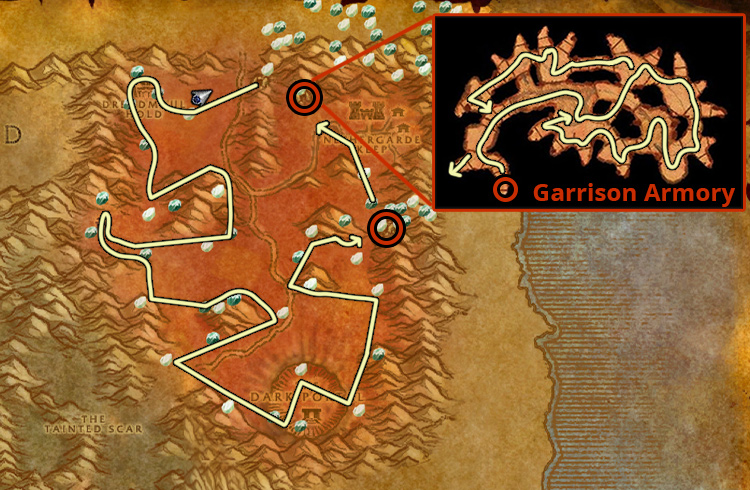
There are usually 2 mining nodes insides the cave marked with a red circle. It's worth going inside the cave because it's not too large and there aren't that many mobs inside, and if you are high level, you can pass some of them without aggro.
I recommend skipping the other two caves at Jaednar, especially Shadow Hold. (maybe if you have stealth it's worth going inside them)
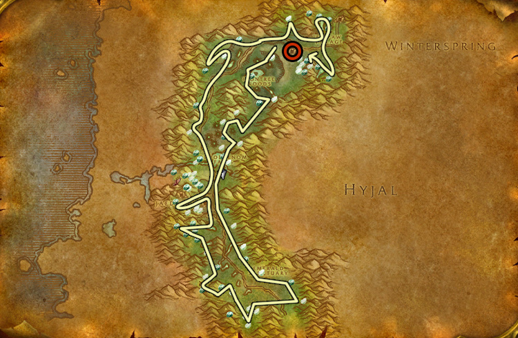
275 - 300
Ores in these zones:  Thorium Ore,
Thorium Ore,  Mithril Ore
Mithril Ore
Now you can mine Rich Thorium Veins too.
Almost the same as the previous Un'Goro route, but now it includes Rich Thorium Veins.
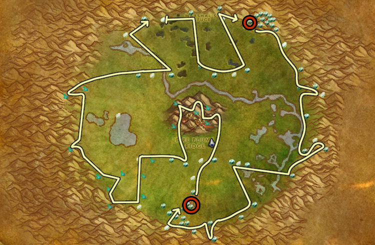
The red line is filled with level 57-58 elites, so if you have bad gear, you should probably just skip that part entirely unless you have stealth. With some practice, you can usually get through only aggroing a few of them.
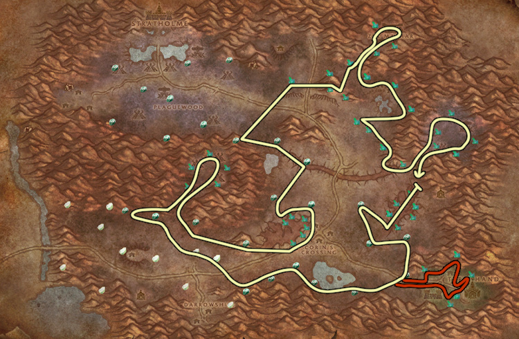
All of these notes below are for players below level 70. If you are already at max level, just ignore these, you can farm the full map without problems.
- The mobs in this cave are not that hard to kill, so it's worth clearing for most classes. (depends on gear)
- Most classes can enter at least the first part of the cave without pulling aggro. You can try going deeper depending on your gear.
- There are a lot of elites patrolling inside this gorge, but you can usually pass most of them without pulling aggro. Sometimes you have to kill 1 or 2.
- This area is not recommended for most players because it's hard to farm here without dying. Really depends on your class and your experience in avoiding mobs.
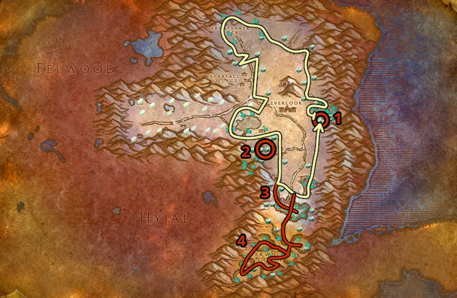
The two caves marked with red circles are filled with level 50 mobs, so lower level players might want to skip them. (depends on gear and level)
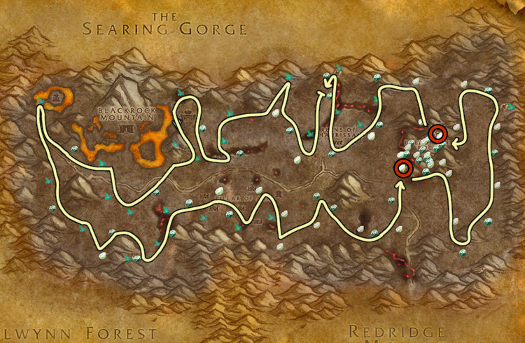
Burning Crusade Classic (300-375)
You can learn the new TBC Mining skill in Hellfire Peninsula from Hurnak Grimmord (Alliance) at Honor Hold or Krugosh (Horde) at Thrallmar.
300 - 325
I recommend Route 1 and Route 2 for level 70 players with flying mount. There is not much difference between the two routes, I got roughly the same number of Fel Iron on both routes.
If you don't have a flying mount and are still leveling your character, then use Route 3.


It's impossible to avoid pulling mobs in Hellfire Peninsula with a low level character, but this route avoids most areas with high density of mobs, so you can use it with lower level characters.
Don't use this if you have a flying mount!
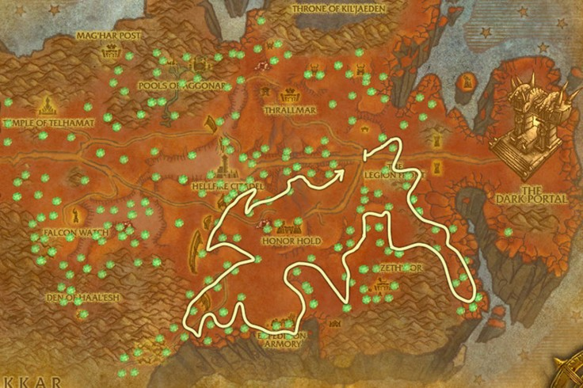
325 - 350
There will be a few Rich Adamantite nodes in Terokkar Forest that you can't mine until you reach 350. But, they can only spawn in the areas accessible by flying mount, so this is not an issue for lower level players. (Skettis and the area above Shattrat City)
There are two caves marked with red circles on the map. You should go inside both of them and make sure that you go all the way to the end because sometimes you won't see the Mining nodes from the entrance.

You will need a flying mount for this route, use route 3 if you don't have one.

Alternative route for players without flying mount.

350 - 375
I recommend getting your last 25 skill points in Nagrand, Netherstorm or Shadowmoon Valley.
These routes below are made for players with flying mount. You can mine everything except Khorium with 350 mining skill, so if you are not level 70 yet, I think it's best to simply focus on leveling and getting your flying mount. I don't think it's worth focusing on getting to 375 if you are not 70 yet.
But, if you want to reach 375 with a lower-level character, I recommend just sticking to Terokkar Forest and Zangarmarsh. Both Adamantite Ore and Fel Iron ore give skill points all the way up to 375.
There are four caves marked with red circles on the map. You should go inside them and make sure that you go all the way to the end because sometimes you won't see the Mining nodes from the entrance.
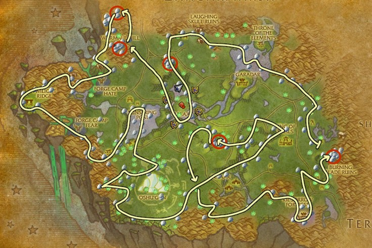
Just like in Nagrand, I marked the caves with red circles on the map. But, you should only go inside if you have stealth or if there is a lot of other people farming in the zone. These are much bigger than the Nagrand caves, and the mobs are a lot higher level. (maybe with good gear it's worth clearing them)
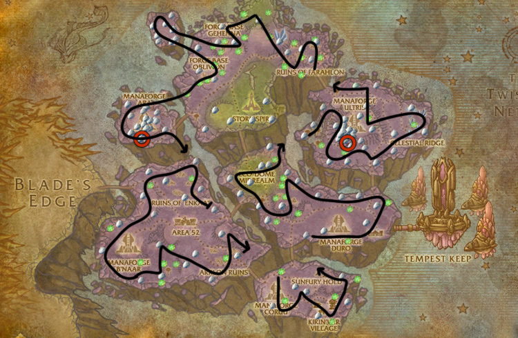
There are two caves in the zone, but it's not worth going inside them. It takes too long to get to the nodes, and you can farm more ores just doing laps in the zone instead.
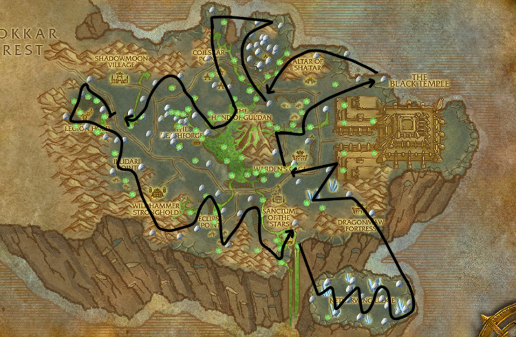
Congratulations on reaching 375! Please send feedback about the guide if you think there are parts I could improve, or you found typos, errors, wrong material numbers!